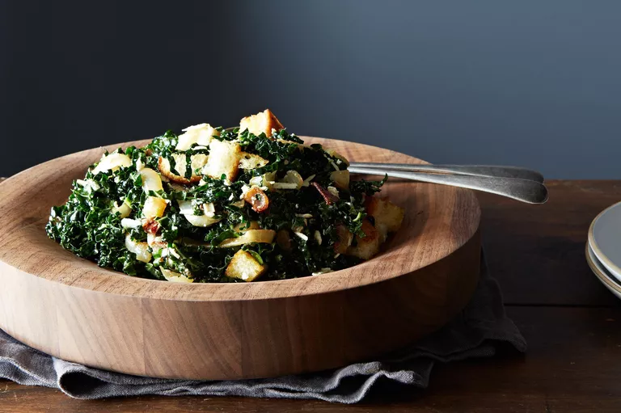

Caesar-Style Kale Salad with Roasted Onions and Ricotta Salata

Description
Some people don't like the raw texture of kale salads, but if some hot ingredients are added to the raw kale, it wilts just enough to tone down the grassy chewiness. Lemon and anchovy bring out the umami in the dressing. Roasted onions with fresh thyme and rosemary add a lot of flavor. Despite a few steps (making croutons and roasting onions), this dish comes together fairly quickly.
Ingredients
- Salad dressing
- 1 1/2 tablespoons freshly squeezed lemon juice
- 1/2 tablespoon rice wine vinegar
- 12 capers, roughly chopped (if salt-packed, rinse before chopping)
- 1 to 2 large anchovies, roughly chopped (if salt-packed, remove tail, fins, and bones before chopping)
- 1/2 teaspoon Worcestershire sauce
- 1 teaspoon Dijon mustard
- 1/4 cup extra virgin olive oil
- Kosher salt and freshly ground pepper to taste
- The rest of the salad
- 2 sweet onions, preferably Vidalia or Walla-Walla
- 2 sprigs fresh thyme
- 1 sprig fresh rosemary, about 1 inch long
- 3 1/2 tablespoons extra virgin olive oil, divided
- 2 to 3 slices day-old, best-quality bread (I like ciabatta or sourdough boule)
- 1 small bunch Lacinato kale
- 2 slices thick cut bacon
- 1/2 cup grated ricotta salata cheese (or you can substitute feta)
- Kosher salt and freshly ground pepper to taste